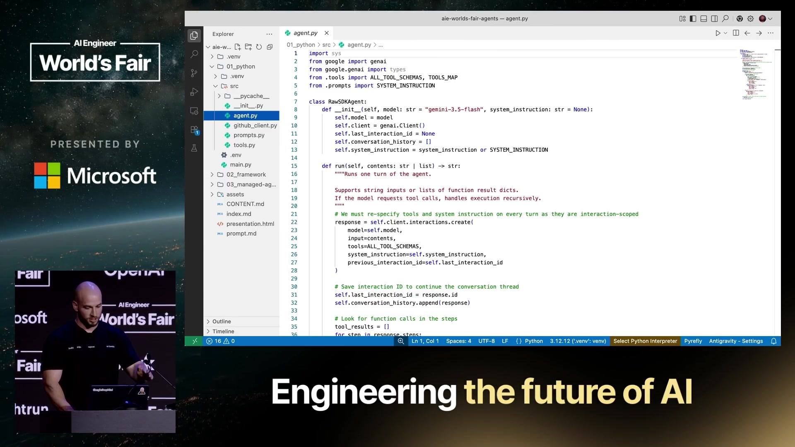
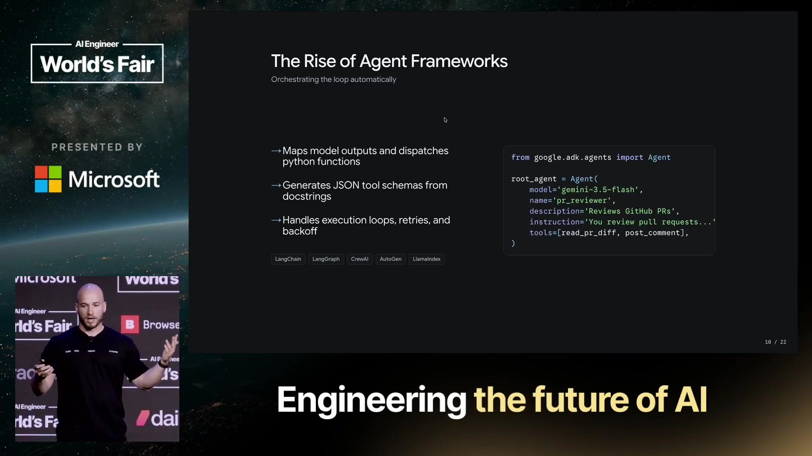
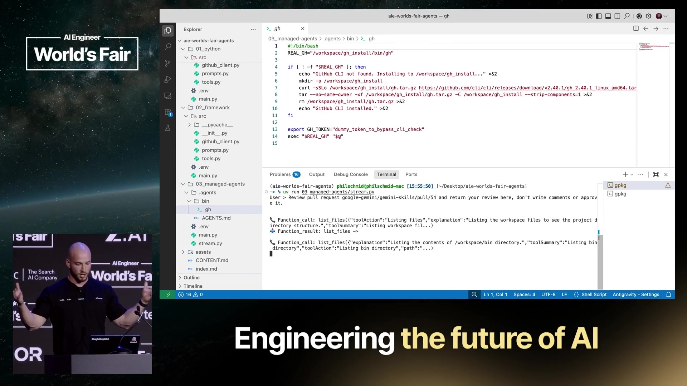
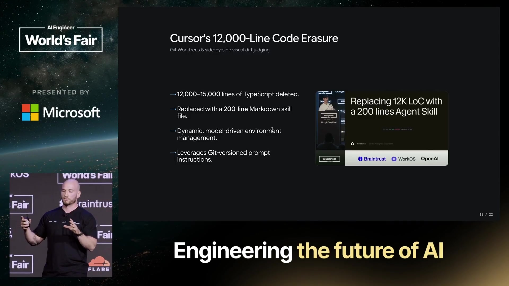
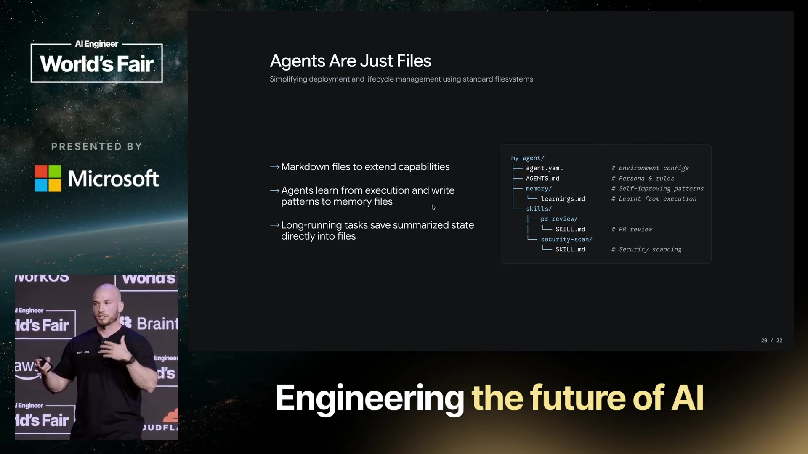

1. 开场与 Interactions API
00:00:12Philipp Schmid · 主讲大家好，谢谢大家来参加。我知道今天已经是第四天了，这又是下一场主题演讲开始前的最后一场分享。我们来做点有趣的事情：看看文件怎样取代 Python。
00:00:25Philipp Schmid · 主讲开始之前，我想先引用 Simon 给出的、我最喜欢的 Agent 定义：“一个 LLM Agent 在循环中运行工具，直到实现目标。”今天我们会用三种不同的方式，构建同一个 Agent，也就是同一个 GitHub PR 审查 Agent。在这个过程中，我们会不断删除代码。每个新版本的代码都会更少，而文件会更多。
00:00:45Philipp Schmid · 主讲在正式开始之前，我想快速介绍一下 Interactions API，也就是我们新的 Gemini API。它是运行模型和 Agent 的统一接口。你既可以用它直接调用 Gemini 模型，也可以调用我们新的、带有沙箱的 Agent。
00:01:05Philipp Schmid · 主讲它支持服务端状态管理和后台执行，因此非常适合未来几年将要出现的各种应用。工具调用、多模态理解、多模态生成，也都使用同一个 API，你始终面对相同的接口。如果你用过其他 LLM 应用，它可能看起来很熟悉。我们确实希望为开发者提供一个大家喜欢用来构建应用的东西，接下来也会实际使用它。
00:01:35Philipp Schmid · 主讲Interactions API 与其他 LLM 应用或 API 有一点不同：我们从按轮次组织的对话历史，转向了步骤。直到几个月前，大多数应用仍然以轮次为基础：用户输入，然后模型输出；再来一次用户输入，再来一次模型输出。对于普通聊天应用，这当然行得通。
00:01:58Philipp Schmid · 主讲但只要开始构建 Agent、使用推理模型，就不再只是用户角色和模型角色了。我们还有不同的输入、不同的类型，以及推理过程。因此，我们决定作出一次改变，真正为 Agent 设计一些东西。

00:02:13Philipp Schmid · 主讲右侧这条扁平的步骤时间线，就是我们采用的方式：先是用户输入，然后是推理、函数调用、函数结果。你不再需要为了把环境中的数据传回来，就勉强把它塞进用户角色里。
2. 第一版：手写 Python 循环
00:02:29Philipp Schmid · 主讲大约一年到一年半以前，编写 Agent 大多意味着在 Python 中写一个循环。你需要定义 JSON schema，定义 Python 函数，查看 LLM 的输出，判断它究竟是函数调用还是文本响应，再根据类型进行匹配并调用工具。之后还要看看有没有错误，再这样来回执行。
00:02:54Philipp Schmid · 主讲我们来看一段这样的代码，再实际运行一下，希望演示之神今天能眷顾我们。我自己构建了一个版本，或者说，是我让 Gemini 构建了这个 Python 循环的基础实现。

00:03:09Philipp Schmid · 主讲这里有一个类，还有一个使用 Interactions API 的 run 函数。你能看到函数调用中那些奇怪而复杂的解析逻辑：追加错误、检查是否发生错误，然后再获得结果。
00:03:23Philipp Schmid · 主讲当然，Agent 还需要系统指令。因此，我们把系统指令放在一个单独的文件中，内容很简单：你是一个 GitHub PR 审查器。接下来还需要工具。为了提供工具，我们要编写 JSON schema，写明规范和描述，精确定义 Agent 可以执行哪些动作。
00:03:44Philipp Schmid · 主讲然后还得有实际实现。这个例子使用最基础的 GitHub API，发送一些请求。我们可以运行它。这里的主程序只是一个很简单的输入界面，我们可以先说声“你好”。
00:04:06Philipp Schmid · 主讲它回复说：“你好，我是一个 Agent。”然后，我们让它审查 Gemini Skills 仓库中的一个 Pull Request。接下来，应该很快就能看到 Agent 发出函数调用、得到函数结果，再发出函数调用、再得到结果。
00:04:24Philipp Schmid · 主讲很好，它运行起来了。不过，它的能力被严格限制在我们定义的工具之内。如果要求它做一件它不具备相应能力的事情，它就会说：“我做不了。”这很遗憾，但这就是我们之前构建 Agent 的方式：直接写 Python 代码，维护许多文件，很多地方都可能出错，还有大量代码需要管理。
00:04:49Philipp Schmid · 主讲那么，我们究竟要负责什么？我们有 token 生成，也有原生函数调用，但循环必须由我们来执行；工具路由由我们处理，JSON schema 由我们创建，Python 代码由我们编写和执行，状态也由我们管理。为了让一个 Agent 跑起来，我们必须做很多事情。
3. 第二版：Agent 框架
00:05:06Philipp Schmid · 主讲后来，Agent 框架出现了。各种不同的框架把一部分复杂性抽象掉了。比如这里的 ADK 框架，现在提供一个 Agent 类，负责所有工具循环、函数调用、重试和错误处理，让事情变得容易了一些。

00:05:24Philipp Schmid · 主讲基本上，我们把过去每次编写 Agent 都不得不写的样板代码删掉，将它们放进框架中，帮助大家构建应用。回到演示，还是同一个例子。我们进入第二版的目录，把两边都打开来看。
00:05:46Philipp Schmid · 主讲有意思的是，我们不再有原来的 Agent 文件了，那个 Agent 实现已经消失。系统提示还在，还是相同的系统提示；工具也还在。不过，这次连 JSON 定义也没有了，因为 Agent 框架现在会根据函数签名，动态生成 JSON schema，再提供给模型。
00:06:10Philipp Schmid · 主讲我们先停止刚才的 Agent，再运行第二个 Agent。相似的界面，相似的提示，我们应该也能看到相似的预期行为：出现函数调用，尝试获取 PR 数据、获取 diff，以及获取需要的所有代码。它运行起来了，我们等它继续。
00:06:36Philipp Schmid · 主讲但这里还是有类似的困难。如果我问：“旧金山的天气怎么样？”我们应该会得到类似这样的回答：“我做不了，我无法访问天气 API。”这当然有道理，因为我们没有定义任何相应工具。
00:06:53Philipp Schmid · 主讲但这仍然很遗憾，因为我们必须非常明确地规定 Agent 能做什么。大家都知道，如今我们只想输入一个需求，希望 Agent 为了实现这个目标，去做所有必要的事情。
00:07:05Philipp Schmid · 主讲那么，还剩下什么需要我们自己做？框架解决了什么？框架解决了轮次循环、路由、执行映射，以及不同函数调用所需 JSON schema 的创建，但 Python 的衔接代码仍然属于我们。

00:07:18Philipp Schmid · 主讲我们仍然需要用 Python 编写这些工具，仍然要补充特定的规则或要求，以确保 Agent 按照我们的意图行事。我们还需要提供工具运行的环境，决定把这些工具部署在哪里。
4. 第三版：远程 Agent 与沙箱
00:07:35Philipp Schmid · 主讲接下来是什么？希望接下来就是远程 Agent。在 Google I/O 上，我们在 Gemini API 中发布了 Antigravity 远程 Agent。它使用的 Agent Harness，与 Antigravity IDE 使用的是同一套。
00:07:50Philipp Schmid · 主讲这里有一点非常重要：相同的 Harness，并不意味着相同的 Agent。Antigravity IDE 中的 Agent 目前是一个编码 Agent，而 Gemini API 中提供的是一个通用 Agent。因此，它们可能有不同的系统指令，工具也可能略有不同。比如，Gemini API 本来就有 Google Search 工具，所以我们会使用已经构建好的能力。
00:08:11Philipp Schmid · 主讲非常重要的是，它提供了一个新的 environment 参数。这个参数让 Agent 可以访问一个托管的、隔离的云端沙箱。在那里，它可以运行工具、执行 Bash 命令，也可以保存文件。
00:08:25Philipp Schmid · 主讲这些环境是可以配置的。你可以提供资源来源，它可以是 GitHub 仓库、GCS 存储桶，也可以是直接传入的文件。当然，我们希望确保这些 Agent 的安全，不能让它们随意使用我们的凭证。
00:08:42Philipp Schmid · 主讲因此，我们在 Agent 沙箱外围构建了一个网络代理。当 Agent 从沙箱内部向外部发出请求时，代理会注入凭证。Agent 自己实际上从来不会看到你的凭证。它只知道：“我可以调用 GitHub API。”我们则在请求过程中确保请求带上你所配置的正确令牌。

00:09:03Philipp Schmid · 主讲你也可以限制 Agent 能够访问哪些域名。如果希望彻底限制它的网络访问、限制它能够访问哪些网站，你就把这里留空〔此处“留空”所指的具体配置项不明确〕。默认情况下，Agent 可以访问所有域名，因为如果每次都得先定义它可以去哪里，确实很麻烦。所以，我们尽量让配置保持简单。
00:09:20Philipp Schmid · 主讲当然，能发起 API 调用很好，但我们想到，大家会希望复用自己的配置、复用自己的 Agent。所以，我们加入了 Agents API。你可以定义自己的自定义 ID，配置同样的系统指令、基础 Agent 和基础环境，然后创建这个 Agent。
00:09:38Philipp Schmid · 主讲之后，你只要提供这个 ID，就能以与调用 Gemini 模型或 Antigravity Agent 完全相同的方式使用它。因此，既有代码可以继续复用，同时使用你自己的自定义 Agent、工具、凭证和环境，以及运行所需的其他内容。我们来看一下源代码和演示。
00:10:01Philipp Schmid · 主讲好，现在来看第三版。有一个变化可能非常明显：我们已经不再有源代码目录了，那部分代码消失了。现在我们有一个 .agents 文件夹，里面有一个包含系统指令的 AGENTS.md 文件。

00:10:16Philipp Schmid · 主讲系统指令仍然很相似。唯一的区别是，我们告诉 Agent：“你可以使用 GitHub CLI。”我们不再为了读取 GitHub Pull Request 中的文件、访问某个 Pull Request，分别创建专用工具。
00:10:31Philipp Schmid · 主讲我们只是告诉它：“你有 GitHub CLI，有 Bash 工具，也有文件系统。只要你认为有必要，就尝试使用它们。”因为我们还没有安装 CLI，所以这里还有一个很基础的 Bash 脚本：检查 GitHub CLI 是否已安装；如果已经安装，就使用它；如果没有，就在第一轮下载并安装。
00:10:50Philipp Schmid · 主讲我们进入终端，运行这个 Agent。这里也许需要说明一下：我使用了流式版本，否则我们可能要等好几秒，期间什么都看不到。还是相同的提示，接下来应该很快就能看到函数调用和函数结果。
00:11:13Philipp Schmid · 主讲是的。因为我们运行在沙箱中，Agent 会先探索沙箱，确认 GitHub CLI 是否已经安装，然后尝试运行它。第一轮没有找到，所以它就安装了 CLI。接着，我们就能看到 Agent 开始工作。

00:11:28Philipp Schmid · 主讲这一次，它没有使用预先定义的那些函数调用，而是在使用 GitHub CLI，以及它对这个 CLI 工作方式已有的知识：我有 Bash 工具，可以访问文件系统，就能完成这些工作，审查这个 Pull Request。我们稍等一下。
00:11:47Philipp Schmid · 主讲好了。我认为这里最棒的地方是：如果再问一次刚才那个问题——“旧金山的天气怎么样？”——我们应该会看到 Agent 尝试使用……它在这里使用了 Google Search。日期是 7 月 2 日。我确认一下，对，就是今天。气温大约是 20 摄氏度。它成功了。
00:12:13Philipp Schmid · 主讲因此，这个 Agent 变得更像一个通用 Agent，我们也不必明确指定所有的专用工具。我们基本上是在相信模型能够理解：我拥有一组非常基础、通用的工具，可以用它们来解决自己的任务，或者用户交给我的任务。
00:12:28Philipp Schmid · 主讲如果来看一下这个接口的代码，这里有我们提供的资源：一个安装 GitHub CLI 的 Bash 脚本，还有 AGENTS.md 文件。然后，我们声明：你可以在使用凭证的情况下调用 GitHub API。
00:12:45Philipp Schmid · 主讲我希望安全地使用 GitHub 凭证，所以为 API 配置了一个令牌，也为 github.com 配置了一个，因为这两个地址都需要。一边用于 Git 命令，另一边用于 HTTP 命令。
00:12:59Philipp Schmid · 主讲domain all 的意思是：除了 GitHub 的这些地址，你也可以访问整个网络，但访问其他网站时没有对应的凭证。然后，我们只需向 Antigravity Agent 发起一次简单的 API 调用，传入用户输入、环境，以及前一次的 interaction ID，以维持多轮对话。这就是所需的全部内容，一次 API 调用。
00:13:20Philipp Schmid · 主讲在后台，我们启动云端沙箱，从环境中加载 AGENTS.md 文件和 Skills，把它们提供给模型。模型就在 API 与沙箱之间执行整个循环：调用函数、返回函数结果，再调用函数、再返回函数结果。事情就是这样运行的。
00:13:40Philipp Schmid · 主讲那么，这给我们带来了什么？我们不再需要自己执行循环，不再需要自己处理工具路由。对话与会话状态保存在服务端，所以我们只需要提供新的输入。上下文窗口和压缩也由 Agent 自动管理。
00:13:56Philipp Schmid · 主讲如果我们继续对话，到某个时刻，上下文就会被压缩，我们无需亲自管理这些事情，也能继续进行。我们还获得了一个隔离的远程 Linux 沙箱，可以用它运行代码。
5. 扩展、文件记忆与结尾
00:14:09Philipp Schmid · 主讲那么，哪些事情仍然需要我们负责？我们需要定义指令，在 AGENTS.md 中定义规则和行为；需要在 SKILL.md 中提供能力或上下文；评估也必须由我们自己负责。
00:14:20Philipp Schmid · 主讲所有繁重的工作、基础设施管理，以及那些我们在座每个人大概都已经写过二十遍的相同代码，都不再需要重复编写。你可以真正开始构建自己的产品，而不必一遍又一遍重写相同的代码。
00:14:35Philipp Schmid · 主讲但有一个重要的问题：这很好，可是如何扩展呢？比较过去的 Agent 与这种新 Agent 的扩展方式，就会非常明显。假如要对 Pull Request 做安全扫描，过去我们需要定义、编写一个 Python 函数，弄清楚需要使用哪些 CLI 工具，再定义一个新的函数 schema，把它加入工具集合，然后运行。要做的事情很多。

00:15:05Philipp Schmid · 主讲对于由文件驱动的 Agent，我们编写一个 SKILL.md 文件，可能补充一些关于应该使用哪个 CLI 工具的信息，或者把 CLI 工具放入环境中，这样就扩展了它的能力。我们不需要修改应用代码，只需要向 Agent 提供更多文件，由 Agent 来判断该怎么做。
00:15:23Philipp Schmid · 主讲我想举几个非常好的例子。在 AI Engineer Europe 上，Cursor 做过一场很棒的分享：他们把大约一万两千行 TypeScript 代码，替换成了两百行 Agent 文件，用来完成类似的事情。原来，他们为 Git worktree 操作写了一套非常硬编码的编排逻辑，后来只用一个 Skill 和 Markdown 文件就替代了它。

00:15:45Philipp Schmid · 主讲Agent 工程还有更多这样的“苦涩教训”。去年，Manus 在六个月里重构了五次 Harness；LangChain 在一年里三次重新设计 Open Deep Research；Vercel 则移除了 80% 的工具，得到了更少的步骤、更快的响应和更好的准确性。

00:16:04Philipp Schmid · 主讲因此，趋势很明显：随着模型能力变强，我们能够删除编排代码。但如果模型越进步，你的 Harness 反而越复杂，那么你很可能是在对 Harness 过度工程化。
00:16:18Philipp Schmid · 主讲如果模型改进、加入新能力，给你带来的却是更多复杂性和更多代码，那你可能需要重新思考一下自己的 Agent Harness 应该是什么样子。
00:16:29Philipp Schmid · 主讲那么，最后会走向哪里？Agent 就是文件。我们编写 Markdown 文件来扩展能力，Agent 可以从中学习，也可以创建自己的文件。假如在一次会话里，你告诉 Agent 记住一些事情，记录一些规则或偏好，它就会把这些内容写到磁盘上，在后续会话中复用。
00:16:50Philipp Schmid · 主讲你还可以把上下文外部化。如果一次会话已经运行了很长时间，而你在过程中发现，自己可能还想开发另一个功能，就可以把相应信息和交接内容写进一个文件，告诉 Agent 之后再接着处理。

00:17:05Philipp Schmid · 主讲那么，今天有哪些要点？我们不应该与模型对抗。不要再对执行路径进行事无巨细的控制，而应该为 Agent 提供通用工具，让模型自己探索、推理，发现正确的解决方案。
00:17:15Philipp Schmid · 主讲掌握属于你自己的工作，也就是专注于领域指令和工作流，尤其要专注于评估。定义清晰的工具，并验证结果。

00:17:26Philipp Schmid · 主讲还要真正做到“为了将来能够删除而构建”。过去我们已经多次见过：模型越好，能够删掉的代码就越多，需要调整的事情也会越多。显然，我们都希望从更好的模型中受益。
00:17:37Philipp Schmid · 主讲那么，星期一回去以后，你们可以做些什么？扫描这个二维码，它会直接带你进入 AI Studio，在那里就能立即体验 Antigravity Harness。你现在就可以开始向它输入需求，它会启动属于你的自定义沙箱。
00:17:51Philipp Schmid · 主讲也可以先创建自己的 API key。我们目前正在推进 API 的免费层，希望你们很快就能更方便地开始探索。然后，一定要开始构建文件和 Skills。我的分享就到这里，谢谢大家来参加。
00:18:09现场与片尾〔现场掌声〕
00:18:24现场与片尾〔片尾音乐〕